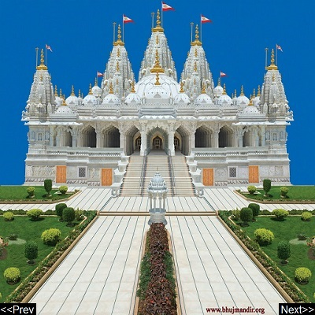

|  |
|
Shri Swaminarayan Mandir, Bhuj Shri Swaminarayan Mandir, Bhuj is a Hindu temple in Bhuj. This temple that was constructed by Swaminarayan, founder of the Swaminarayan Sampraday. Address: Swaminarayan Temple Road, Opp City Police Station, Bhuj, Gujarat 370001 Opened: May 15, 1823 Phone: 02832 250 231 Hours: Open today · 9:00 am – 5:00 pm Function: Hindu temple |